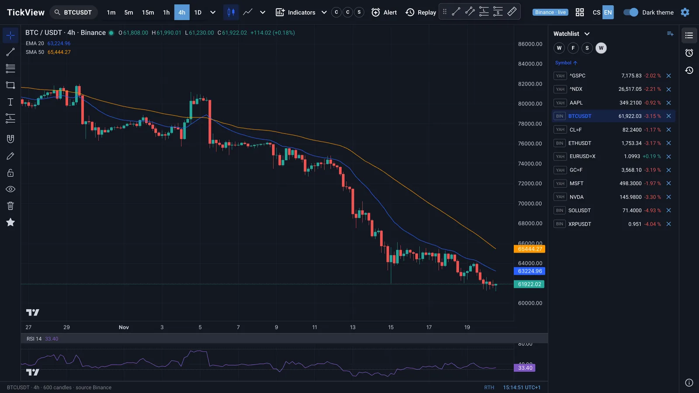
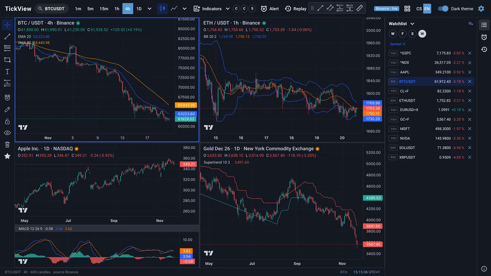

Charts and timeframes
Candles, bars, Heikin Ashi, line, area, baseline and more. Timeframes from 1m to 1W, live updates and older history loaded automatically as you scroll left.
Free · Open source · Apache 2.0 · Python
TickView is completely free – an open-source desktop and web app for candlestick charts of stocks, ETFs, forex, futures and crypto that you can use instead of TradingView, right on your own computer. It pulls data from free sources, stores everything locally and never places a trade – it's strictly read-only.
The controls follow what traders are used to from web-based platforms. It just runs on your own computer.
Candles, bars, Heikin Ashi, line, area, baseline and more. Timeframes from 1m to 1W, live updates and older history loaded automatically as you scroll left.
Trend lines, channels, Fibonacci, pitchfork, rectangles, text, Long/Short Position with risk calculation, a fixed range volume profile (FRVP with POC and Value Area), and a measure tool. Drawings are saved per symbol and show up on every timeframe.
SMA, EMA, VWAP, Bollinger Bands, Ichimoku, Supertrend, RSI, MACD, Stochastic, ATR, OBV and more. Configurable inputs, templates, favorites, and panes you can resize and rearrange by dragging.
Layouts with up to 16 charts, each with its own symbol, timeframe and indicators. Sync the symbol, interval, crosshair and time range across charts.
As many symbol lists as you like, with last price and daily change. Click a symbol to switch the chart, reorder symbols freely and keep the same symbol in several lists.
Alerts on price, on a drawn line or on an indicator signal. The server checks them in the background, even with the page closed, and notifies you via Telegram, webhook, toast or sound.
Run a signal-based indicator across up to 40 symbols from any source on the timeframe you choose and see the results in a table on the chart. Optionally get notified before the bar closes.
Replay history bar by bar and trade manually on a simulated account with spread, slippage and commission. Run as many sessions as you like, each with its own trades and drawings.
Positions of commercials, large speculators and small traders, plus the COT Index, using free data from the CFTC API. The market is derived from the symbol – futures, forex, metals, indices and crypto.
Real screenshots of the app in dark mode – no mockups. Click an image to enlarge it.


TradingView is a comprehensive cloud platform with a huge community. TickView takes a different approach: a free, open-source app that runs only on your own computer. The comparison below also shows what TickView can't do – pick whichever fits your needs.
| Feature | TickView | TradingView |
|---|---|---|
| Price | Free, no subscription and no ads | Free basic plan with ads and limits, more features in paid plans |
| Sign-up | Not required | An account is required for alerts, saving and most features |
| Where it runs and where data lives | Locally on Windows, macOS and Linux; cache, drawings and settings in a local SQLite database | In the cloud – web, desktop and mobile apps synced across devices |
| Open source | Yes, Apache 2.0 | No (the Lightweight Charts™ library is open source) |
| Indicators | 28 built-in | Over a hundred built-in plus a large library of community scripts |
| Custom indicators | In Python (pandas), including signals for alerts and the scanner | In Pine Script |
| Pine Script | No – scripts need to be rewritten in Python | Yes |
| Alerts | Price, drawn line, indicator signal; Telegram, webhook, toast, sound – checked by the local TickView server | Yes, running on TradingView's servers even with your computer off |
| Replay and backtesting | Bar-by-bar replay with manual trades on a simulated account; no automated strategy tester | Bar Replay and the Strategy Tester for Pine Script strategies |
| Multiple charts at once | Up to 16 synced charts | Yes, the number of charts depends on the plan |
| Data sources | Binance, Yahoo Finance, Alpaca, Interactive Brokers, cTrader and the CFTC (COT) | Data from many exchanges and markets; some real-time data is paid |
| Social network and ideas | No | Yes |
| Trading through a broker | No – TickView is read-only | Yes, with selected brokers |
| Mobile app | No | Yes |
TickView is an independent project and is not affiliated with, endorsed by or sponsored by TradingView, Inc. TradingView is a trademark of TradingView, Inc. and is used here for comparison only. Information about TradingView is based on publicly available sources (November 2026) and may change.
Each source is a separate module behind a common interface. For every symbol you can see where the data comes from and whether it's live or delayed.
Crypto. History via the public REST API, live candles over a WebSocket with automatic reconnect.
Stocks, ETFs, mutual funds, indices, forex and futures. History plus ongoing updates via polling, with market-closed notices.
US stocks. One-minute bars over the IEX WebSocket, higher timeframes via polling. Turns on once you enter your keys.
Through TWS or IB Gateway: stocks, forex, spot metals, index CFDs and continuous futures with automatic rollover.
Forex including crosses, metals and index CFDs with tick volume like TradingView. Also supplies volume and VWAP for IBKR forex and CFDs.
Commitments of Traders from the public API. Data takes effect from its Friday release, following the CFTC schedule.
History is kept in a local SQLite cache and only the missing range is downloaded. Each source has its own rate limiter and backs off exponentially on HTTP 429 errors.
An indicator is a single class in its own folder. It receives candles as a pandas DataFrame, its inputs and the instrument context, and returns lines, levels, segments, markers, tables, background colors or signals.
python -m unittest picks them up.from tickview.indicators.api import Indicator, Line, Param, Result
class EmaCross(Indicator):
id = "ema_cross"
title = "EMA×"
name = "EMA crossover"
params = [
Param.int("fast", 9, "Fast"),
Param.int("slow", 21, "Slow"),
]
def compute(self, df, params, ctx):
close = df["close"]
fast = close.ewm(span=params["fast"]).mean()
slow = close.ewm(span=params["slow"]).mean()
return Result(lines=[
Line("Fast", fast),
Line("Slow", slow),
])
INDICATOR = EmaCross()All you need is Python 3.12 or 3.13 – the script picks the right version on its own and, on Windows, installs it for you if needed. The app opens in your browser at http://localhost:8095, or optionally in a native window.
curl -L https://github.com/svopex/TickView/archive/refs/heads/main.tar.gz | tar xz
cd TickView-main
./run.sh --open
Downloads the latest version into a TickView-main folder – all it takes is curl
and tar, which both macOS and Linux ship with. The run.sh script creates
a .venv, installs the dependencies and starts the app.
curl.exe -L -o TickView.zip https://github.com/svopex/TickView/archive/refs/heads/main.zip
tar -xf TickView.zip
cd TickView-main
.\run-windows.bat --open
Works in both Command Prompt and PowerShell on Windows 10 and 11; curl and tar
come with the system. The script finds Python (if it's missing, it installs it just for your user,
no admin rights required), sets up a .venv, installs the dependencies and opens your browser.
--port 8090use a different port--openopen the browser--nativenative window instead of the browserTICKVIEW_DATA_DIRdifferent folder for cache and settings
Updating: run the same commands again in the same folder and the new version replaces the old one.
The data/ folder (cache, settings, drawings) and config.yaml (API keys)
aren't part of the archive, so they stay put.
API keys (Alpaca, cTrader, Telegram, IB) are entered in the app settings and stored only in your local
config.yaml, never in the code. Use config.example.yaml as a template.
Fully asynchronous on a single asyncio event loop, with separate data, logic and UI layers.
Short answers to the most common questions – especially in comparison with TradingView.
Yes. TickView is open source under the Apache 2.0 license, with no subscription, no sign-up and no ads. Data from Binance, Yahoo Finance and the CFTC is free and needs no API key, Alpaca offers a free key (Basic plan) and cTrader a free Open API application with just a sign-up (no broker account needed). Interactive Brokers requires an IB account (a paper account works) and the available data depends on your subscriptions.
For technical analysis on your own computer, yes: candlestick charts, 28 built-in indicators, drawing tools, watchlists, alerts, a scanner, bar replay and up to 16 charts at once. It won't replace TradingView if you need Pine Script, a mobile app, cloud sync, a social network for trading ideas or trading through a broker straight from the chart.
No. Custom indicators in TickView are written in Python: a single class receives candles as a pandas DataFrame and returns lines, markers, tables or signals. Pine Script code has to be rewritten in Python.
From Binance (crypto, live), Yahoo Finance (stocks, ETFs, indices, forex and futures, delayed), Alpaca (US stocks, live once you enter your keys), Interactive Brokers via TWS or IB Gateway, cTrader (forex, metals and CFDs with tick volume, live) and the public CFTC API for the COT report. History is kept in a local SQLite cache.
Windows, macOS and Linux with Python 3.12 or 3.13. The launch script sets up the environment by itself and, on Windows, installs Python if needed. The app opens in your browser on localhost, or optionally in a native window.
Only on your computer. The candle cache, settings, drawings and watchlists live in a local SQLite database and API keys in the config.yaml file. TickView has no account and no server of its own; it only connects to the data sources you choose and to Telegram or a webhook if you set them up for alerts.
Yes. The COT indicators show the positions of commercials, large speculators and small traders, plus the COT Index, using free data from the CFTC API. The market is derived from the symbol – futures, forex, metals, indices and crypto.
No. TickView is an independent open-source project and is not affiliated with TradingView, Inc. Charts are rendered by the open-source Lightweight Charts™ library by TradingView, licensed under Apache 2.0. TradingView is a trademark of TradingView, Inc.
Bugs and feature requests are best filed as GitHub issues; for anything else, send an e-mail.